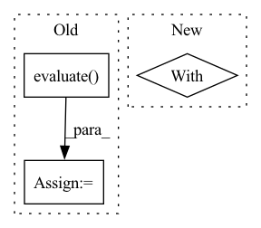

Pattern ID :29428

Before Change
key_name = "eval_accuracy"
if tf.gfile.Exists(checkpoint_path + ".index"):
result = estimator.evaluate(
input_fn=eval_input_fn,
steps=eval_steps,
checkpoint_path=checkpoint_path)
best_perf = result[key_name]
global_step = result["global_step"]
else:
global_step = -1
After Change
_remove_checkpoint(checkpoint_path)
writer.write("=" * 50 + "\n")
writer.flush()
with tf.gfile.GFile(best_trial_info_file, "w") as best_info:
best_info.write("{}:{}:{}".format(
global_step, best_perf_global_step, best_perf))
writer.close()
In pattern: SUPERPATTERN
Frequency: 3
Non-data size: 3
Instances
Fragment ID: 87133728
Project Name: ai4bharat/indic-bert
Commit Name: 50786be4f44b4f9242f40adbc2b9fd54abe43ce3
Time: 2019-12-21
Author: albert-copybara@google.com
File Name: run_classifier.py
M Class Name: AnonimousClass
N Class Name: AnonimousClass
M Method Name: main(1)
N Method Name: main(1)
M Parent Class:
N Parent Class:
M File Name: run_classifier.py
N File Name: run_classifier.py
M Start Line: 244
M End Line: 406
N Start Line: 320
N End Line: 423
'>
Before Change
argmax = udf(lambda v: float(np.argmax(v)), returnType=T.DoubleType())
pred_df = pred_df.withColumn("label_pred", argmax(pred_df.label_prob))
evaluator = MulticlassClassificationEvaluator(predictionCol="label_pred", labelCol="label", metricName="accuracy")
accuracy = evaluator.evaluate(pred_df)
print("Test accuracy:", accuracy)
with mlflow.start_run():
mlflow.log_metric("learning_rate", learning_rate)
After Change
def hyper_objective(learning_rate):
with mlflow.start_run():
model = train(learning_rate)
// Write checkpoint
meta = {
'>
Fragment ID: 87133732
Project Name: oap-project/cloudtik
Commit Name: cf76222205e7c6ad94a12bddf54446f8c2ed5c77
Time: 2022-12-06
Author: haifeng.chen@intel.com
File Name: example/ml/jobs/spark-mlflow-hyperopt-horovod-pytorch-mnist.py
M Class Name: AnonimousClass
N Class Name: AnonimousClass
M Method Name: hyper_objective(1)
N Method Name: hyper_objective(1)
M Parent Class:
N Parent Class:
M File Name: example/ml/jobs/spark-mlflow-hyperopt-horovod-pytorch-mnist.py
N File Name: example/ml/jobs/spark-mlflow-hyperopt-horovod-pytorch-mnist.py
M Start Line: 186
M End Line: 197
N Start Line: 252
N End Line: 265
'>
Before Change
pred_df = pred_df.withColumn("label_pred", argmax(pred_df.label_prob))
evaluator = MulticlassClassificationEvaluator(predictionCol="label_pred", labelCol="label", metricName="accuracy")
accuracy = evaluator.evaluate(pred_df)
print("Test accuracy:", accuracy)
with mlflow.start_run():
mlflow.log_metric("learning_rate", learning_rate)
After Change
def hyper_objective(learning_rate):
with mlflow.start_run():
model = train(learning_rate)
// Write checkpoint
meta = {
'>
Fragment ID: 87133724
Project Name: oap-project/cloudtik
Commit Name: 1d4628d27213dc5dfa75fffa8ba02ec2be572e67
Time: 2022-12-06
Author: haifeng.chen@intel.com
File Name: example/ml/jobs/spark-mlflow-hyperopt-horovod-tensorflow.py
M Class Name: AnonimousClass
N Class Name: AnonimousClass
M Method Name: hyper_objective(1)
N Method Name: hyper_objective(1)
M Parent Class:
N Parent Class:
M File Name: example/ml/jobs/spark-mlflow-hyperopt-horovod-tensorflow.py
N File Name: example/ml/jobs/spark-mlflow-hyperopt-horovod-tensorflow.py
M Start Line: 183
M End Line: 195
N Start Line: 284
N End Line: 299